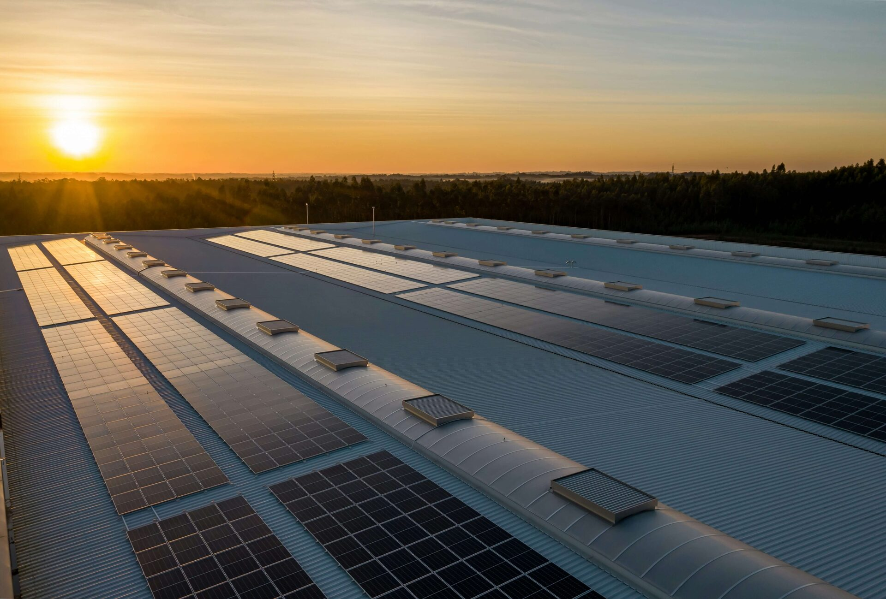

Soluciones por contexto
La misma tecnología no resuelve el mismo problema en todos los sectores.
Partimos de cómo funciona cada operación.

Acompañamos a empresas con consumos relevantes a diagnosticar, modelar e implementar decisiones energéticas con criterio técnico, financiero y operativo.
Una inversión energética impacta CAPEX, costos operativos, continuidad, exposición tarifaria y objetivos ambientales. Por eso el punto de partida no debería ser elegir paneles, sino entender qué decisión tiene sentido para el negocio.
Consumo, perfil de demanda, infraestructura, restricciones y objetivos del negocio.
Escenarios técnicos y económicos para comparar alternativas antes de invertir.
Diseño y selección de soluciones on-grid, off-grid, híbridas y de eficiencia.
Implementación, seguimiento y revisión de performance con una relación de largo plazo.
Partimos de cómo funciona cada operación.
El objetivo es reducir incertidumbre antes de comprometer capital.
Lectura de facturación, consumos, operación, superficie, restricciones y planes de crecimiento.
Comparación de alternativas, inversión, generación estimada, ahorro potencial y sensibilidad.
Definición de arquitectura, equipamiento, documentación, implementación y puesta en marcha.
Monitoreo del desempeño y nuevas oportunidades de optimización a medida que cambia la operación.
Buscamos trabajar con organizaciones donde la energía sea suficientemente relevante como para justificar análisis, seguimiento y decisiones continuas.
Una primera conversación nos permite determinar si vale la pena profundizar el análisis.
Agendar diagnósticoExplorá un escenario inicial con tus datos de consumo. No reemplaza una ingeniería, pero ayuda a ordenar la conversación.
Abrir evaluación →Análisis sobre energía, decisiones de inversión, tecnología y operación empresarial.
Leer bitácora →